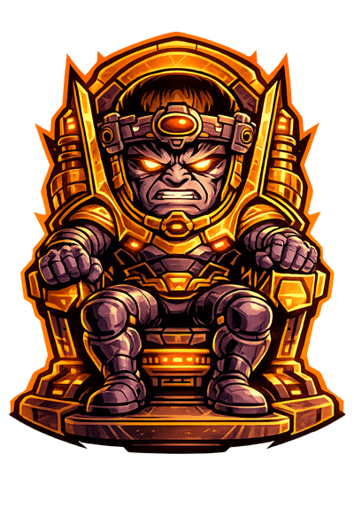

Run 7 Days to Die servers without ever SSH’ing in.
Mastermind is a full-stack control plane and Go host agent: safe restarts, live map, mod quarantine, backups, schedules, Discord alerts and a Steam-verified player portal — with every action queued, audited and attributed.


demo.admin@mastermind.demo · Password DemoAdmin!2026Static mock data in your browser. No backend, nothing is stored.

What it does
Built from real operator pain: restarts that lose progress, mod updates that break the world, and staff who need access without shell keys. The demo exercises each of these.
Safe restart & stability policy
Countdown, save, backup, kick verification and restart — plus a memory watcher that triggers the same flow automatically.
Live map
Official terrain with players, hostiles, animals, claims and region grid; history from 5 minutes to 72 hours.
Mod quarantine & AI-reviewed config
Quarantine, restore, merge compatible settings, and approve AI-proposed edits only after a mandatory diff review.
Players & moderation
Roster, inventory, kick/ban/promote, chat filters, high-ping and country policies, all attributed to an account.
Backups & schedules
Full-world and region snapshots, retention, cron or simple schedules, overlap prevention and Blood Moon safety.
Player portal & donations
Steam OpenID–gated profiles, public map, and a Stripe-backed supporter shop with signed-webhook fulfilment.
Architecture
The public web app never touches telnet, save files or the game process. Work is queued through the control plane and executed locally by a paired agent.
┌──────────────────────────── CONTROL PLANE ─────────────────────────────┐
│ Next.js UI ◄─► NestJS API + WebSocket ◄─► PostgreSQL · Redis/BullMQ │
└──────────────┬──────────────────────────────────────┬──────────────────┘
HTTPS / WS │ │ job queue · heartbeat
▼ ▼
┌──────────────── HOST (Go agent) ───────────────────────────────────────┐
│ one-time pairing · versioned heartbeat · job runner · game adapters │
│ └────► 7 Days to Die server (telnet / Allocs) │
└─────────────────────────────────────────────────────────────────────────┘
1 · Click
Staff triggers an action in the dashboard.
2 · Authorize
Role checked; job enqueued per server.
3 · Execute
Agent runs it locally via an allow-listed adapter.
4 · Audit
Output and initiating account return to the UI.
Engineering highlights
Decisions that matter beyond the feature list.
Security by design
Salted scrypt with legacy migration, persistent hashed-bucket login throttling, JWT agent identity with key rotation, encrypted integration secrets, signed Stripe webhooks, and a documented security audit.
Reliable job pipeline
BullMQ queues with serialized mutations, bounded read concurrency, jittered retries, stale-run recovery, backpressure and overlap prevention for scheduled work.
Privacy boundary
Public endpoints expose only server name and player count. Positions, IPs, telnet output and tokens stay behind Steam-verified or staff auth.
Documented & maintained
Architecture, ERD, release context and design docs per feature, a protected main branch, PR templates and a detailed changelog.
Tech stack
Run it yourself
Requires Docker, Node 20, pnpm 9 and Go 1.22.
- Clone and configure
git clone https://github.com/248Tech/Mastermind-7DTD-AI-Server-Manager.git cd Mastermind-7DTD-AI-Server-Manager # set BOOTSTRAP_ADMIN_EMAIL and BOOTSTRAP_ADMIN_PASSWORD in infra/.env
- Start everything
make start
- Sign in at
http://localhost:3000/login, then pair a host from Hosts → Pair New Host.